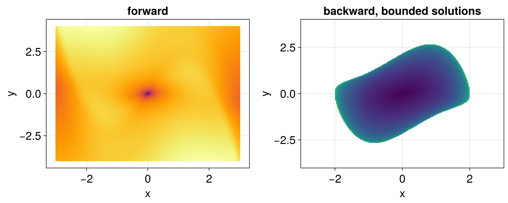

Van der Pol oscillator
The van der Pol oscillator
\[\begin{cases} \dot x = y, \\ \dot y = \mu (1 - x^2) y - x, \end{cases}\]
with $\mu > 0$, has an unstable focus at the origin and an attracting limit cycle. Forward in time, all solutions approach the limit cycle. Backward in time, the solutions inside the limit cycle approach the origin, while those outside grow without bound.
The solutions that diverge backward in time need to be stopped, with the keyword max_trajectory_value of solve. The forward and backward solutions are stopped separately, so the forward descriptors are not affected:
using LagrangianDescriptors, OrdinaryDiffEq, CairoMakie
using LinearAlgebra: norm
function vanderpol!(du, u, μ, t)
x, y = u
du[1] = y
du[2] = μ * (1 - x^2) * y - x
end
prob = ODEProblem(vanderpol!, [0.0, 0.0], (0.0, 10.0), 1.0)
M(du, u, p, t) = norm(du)
xs = range(-3, 3, length = 201)
ys = range(-4, 4, length = 201)
uu0 = [[x, y] for y in ys, x in xs]
lagsol = solve(LagrangianDescriptorProblem(prob, M, uu0), Tsit5(); max_trajectory_value = 10.0)
count(lagsol.terminated_forward), count(lagsol.terminated_backward)(0, 28974)The descriptors of the stopped backward solutions only measure how fast they diverge, so we leave them out of the backward picture, setting them to NaN:
Lbwd = lagsol(:backward)
Lbwd[lagsol.terminated_backward] .= NaN
fig = Figure(size = (1000, 400))
ax = Axis(fig[1, 1]; title = "forward", xlabel = "x", ylabel = "y")
heatmap!(ax, lagsol, :forward)
ax = Axis(fig[1, 2]; title = "backward, bounded solutions", xlabel = "x", ylabel = "y")
# Makie's `heatmap(xs, ys, z)` has `z[i, j]` at `(xs[i], ys[j])`, hence the `permutedims`
heatmap!(ax, xs, ys, permutedims(reshape(Lbwd, size(uu0))))
fig
Forward in time, all solutions approach the limit cycle, and the descriptor only shows the unstable focus at the origin. Backward in time, the limit cycle is repelling, and it appears as the boundary of the region of solutions that remain bounded.